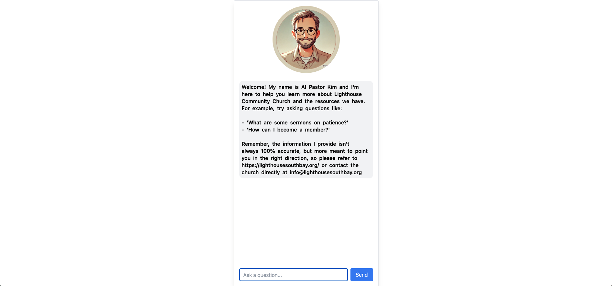
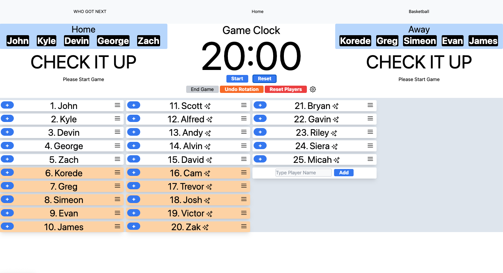
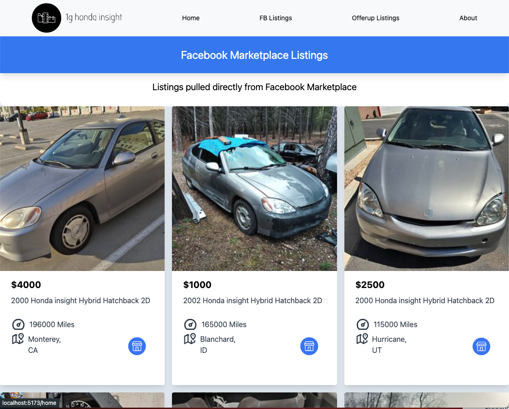

hover to shoot tap to shoot

A GPT-powered assistant that helps church members find relevant information instantly
Python | FastAPI | Pinecone | OpenAI API | GitHub Actions | BeautifulSoup
My church has a website with over 10 years worth of resources, so I thought that I could leverage AI to help users find resources quickly and through an AI Chat bot.
Built a semantic search chatbot using OpenAI embeddings and Pinecone vector search to answer questions about church events, ministries, and resources. Trained on scraped and cleaned data from the church website, then fine-tuned the UX for natural language interactions. Scheduled weekly scraping and indexing via GitHub Actions to keep the chatbot up to date. Try it out yourself! Ask it something like "Tell me about Lighthouse"

Basketball Game Scheduler and Score Keeper
TypeScript | React
Solving a real-life problem: Tracking who is on next at pick-up basketball, and score keeping.
I absolutely love this application because I personally benefit from it every week when I play basketball at church. I painfully watched as my friend Alvin kept track of the order of over 30 people for who was playing next - all on pen and paper. That's when the lightbulb went off in my head to build an app that kept it all organized.
Using Computer Vision and Machine Learning to Track Basketball Shot Makes / Misses
OpenCV | YOLO | Python | Machine Learning
I wanted to have technology track my basketball shooting percentage for me, so I built an application that could do it for me using computer vision and machine learning. I Leveraged a deep learning object recognition model called YOLO, and trained it on 1000s of photos that I manually labeled. Combined with OpenCV, the model was able to make real-time inference on my shot attempts and makes on a video the model had never seen before.

Used Car Marketplace Web Scraper
Python | Flask | Selenium | TypeScript | React
One of the quirky cars that I drive is Honda's first ever hybrid car that looks like a jelly bean. I have multiple friends who were curious and ended up buying one for themselves, so I wanted to create a central place for all things Honda Insight.
I Leveraged Selenium to web
scrape, clean, and process used car market listings data from sites like
Facebook Marketplace, OfferUp, LKQ, and aggregated all the listings
into one place, and used ChartJS to build a price trends metrics
dashboard that enables users to make informed buying decisions.
After spending my early career in recruiting at Google and selling Adtech Software at a startup, I decided to make
a complete pivot into software engineering and have been loving it.
While I'm away from my desk, you'll catch me shooting hoops, surfing or snowboarding.